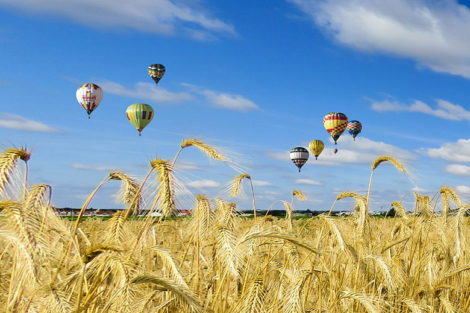

Цікаві факти про Україну
Україна — розмаїта, багатогранна та незвичайна! Можна щодня дізнаватися про неї щось нове, і ці факти ніколи не будуть повторюватися. Тож сьогодні ми підготували для Вас чергову порцію цікавинок. Насолоджуйтеся !
Цікаві факти про Україну
- Вулиця Хрещатик — найкоротша з усіх головних вулиць у світових столицях. Так, її протяжність — усього 1 300 метрів.
- У давні часи, Україною пролягав «шлях із варяг у греки» — один із найбільших історичних транспортних шляхів. Його довжина — понад 3 000 кілометрів. Україна-Русь слугувала своєрідним мостом між Східною Європою та Давнім Сходом.
- Українська мова мова займає 26 місце за кількістю носіїв у світі, та є другою за поширеністю серед мов слов’янської групи (після російської).
- Найдавніша згадка про українську мову датується 858 роком. Основоположником же нової української мови вважають Івана Котляревського з його «Енеїдою» (1842 рік).
- Майже всі слова в українській мові, які розпочинаються з букви «Ф», є запозиченими з інших мов.
- Найчастіше українці вживають дієслово «бути», займенник «він» та іменник «рука».
- Слово «Україна» було вперше вжито в 1187 році в Іпатіївському літописі. Уже тоді, воно набуло широкого вжитку в усній народній мові та літературних творах.
- 4 з 20 лавр — українські. Три з них є православними: Києво-Печерська, Почаївська та Свято-Успенська Святогірська. Одна ж лавра, Свято-Успенська Унівська, є греко-католицькою.
- Києво-Могилянська академія — найстаріший навчальний заклад у Східній Європі. Вона заснована в 1615 році, та на сьогодні є національним університетом, який відомий далеко за межами України.
- Відомий художник Пабло Пікассо був у захваті від робіт українки Катерини Білокур. Коли митці зустрілися особисто на виставці в 1954 році, Пабло назвав полотна Катерини геніальними.
- В Україні є власне «Мертве море». Усі ми знаємо про цілющу силу Мертвого моря. Та не кожен знає, що на Херсонщині є схожа за властивостями водойма — солоне рожеве озеро. Його вважають залишком прадавнього Лемурійського моря. Дехто вважає, що це озеро має лікувальні властивості.
- Одне з найбільш романтичних та унікальних місць в Україні — це «Тунель кохання», розташований на Рівненщині. Це — чотириметровий «зелений» тунель природного походження. Ботанічна аномалія утворена сплетінням дерев та кущів.
- І наостанок — про найдавніших українських поетес. Ними були Анисія Парфенівна та Анна Любовичівна, які творили, орієнтовно у XVII столітті.